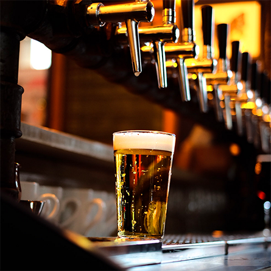

Ølspecialiteter

Vores udvalg
Hos Væskebalancen har vi altid 14 øl på fad - derunder to faste - og køleskabet fyldt til randen med
øl på både dåse og flaske. Øllene bliver skiftet ud tre gange om ugen, så der er altid noget nyt at
prøve.
Nedenfor på siden kan du se vores liste, som selvfølgelig bliver opdateret løbende, så du altid kan
se det nyeste.